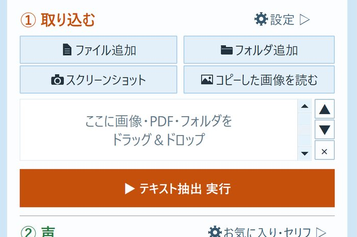
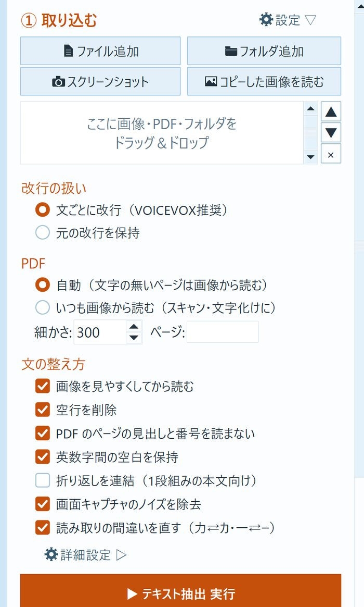
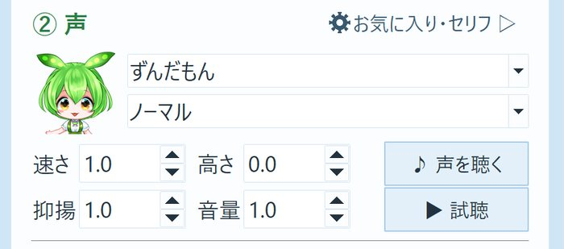
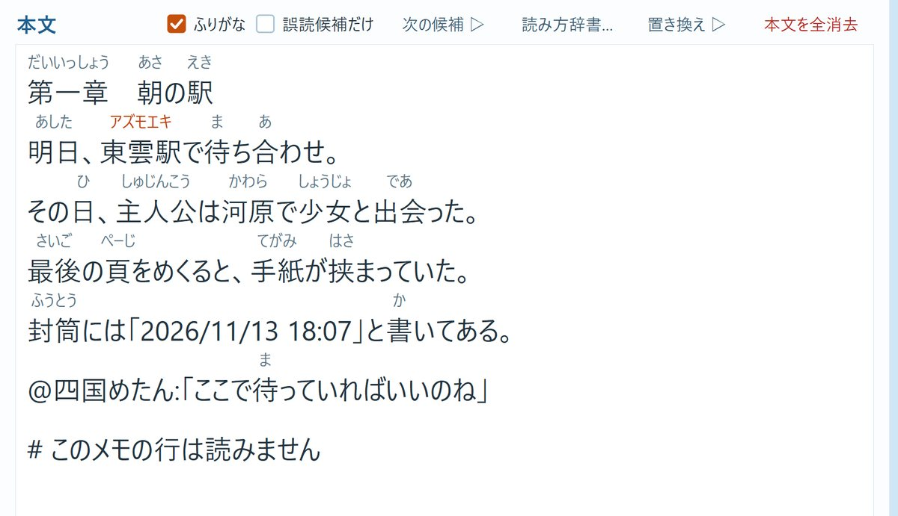
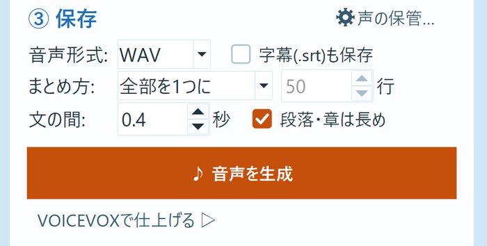
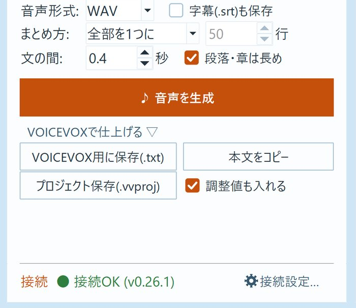
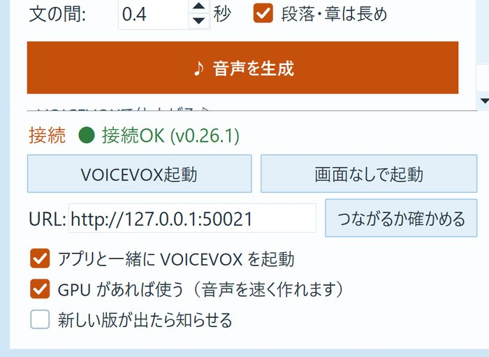
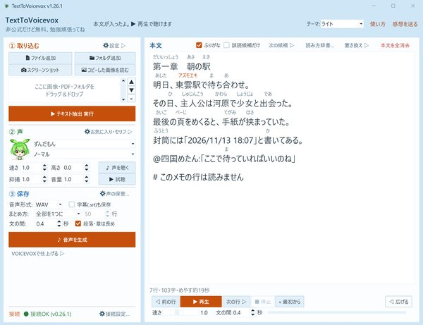

TextToVoicevox Manual
A free app that pulls the text out of PDFs, images and your screen, reads it aloud in VOICEVOX voices such as Zundamon, and saves it as audio files.
Get started in 3 minutes
The details are in the chapters below. These three steps are all it takes.
- Install VOICEVOX … download it from the official VOICEVOX site and install it (it is the program that makes the voices; details).
- Install the app … copy the line for your computer, paste it and run it.
Windows
Right-click the Start button → “Terminal”, paste, press Enter
irm https://raw.githubusercontent.com/rakuyou211-blip/TextToVoicevox/main/install.ps1 | iex
Mac
Launchpad → “Terminal”, paste, press return
curl -fsSL https://raw.githubusercontent.com/rakuyou211-blip/TextToVoicevox/main/install.sh | bash
When it finishes, the app opens. From then on, open “TextToVoicevox” on your desktop (on a Mac, in Launchpad). If you would rather not run a command, you can also install from the zip.
- Have it read … drag a PDF or an image onto the app, and its text appears on the right. Click the line you want to hear and press ▶ 再生 (play).
1. What the app does

- Pulls out text … from PDFs, images (PNG, JPG and so on), text files, Word (.docx) and e-books (.epub). Text in scanned books and photos is read on your own computer, too (vertical Japanese text included).
- Reads your screen … draw a box around text on your screen, in an e-book reader or a browser, and it is read aloud.
- Reads aloud … in VOICEVOX voices (Zundamon, Shikoku Metan and others), from the line you pick to the end. It keeps a bookmark, so you can carry on where you stopped.
- Finds misreadings first … above the kanji you see the reading VOICEVOX will actually use (furigana). Readings that differ from the dictionary are colored, so you can fix them before you listen.
- Makes audio files … WAV, M4A, MP3 and M4B audiobooks with chapters, plus subtitles (.srt).
2. What you need
| What | Why | Where to get it |
|---|---|---|
| VOICEVOX (free) | It makes the voices. Without it there is no sound (you can still pull out text). | voicevox.hiroshiba.jp |
| Python 3.9 or newer (free) | The app runs on Python. With the recommended one-line install you don’t need to install it yourself (on Windows you get a build with Python inside; on a Mac it is installed for you if missing). | python.org (only for the zip) |
You need an internet connection only for the first installation.
3. Installation
There are two ways to install the app. We recommend the one-line install. Unlike a zip downloaded in a browser, it doesn’t trigger the “this file may be unsafe” warnings on Windows and macOS, and the same line also updates the app.
Install VOICEVOX (Windows and Mac)
- Open the official VOICEVOX site and download the version for your computer (Windows or Mac). If your computer has a GPU, the GPU version is recommended (it makes voices faster).
- Open the installer you downloaded and follow the steps on screen.
- Start VOICEVOX once and accept its terms of use. You can close it afterwards.
Windows: one-line install (recommended)
- Right-click the Start button and open “Terminal” (or “Windows PowerShell”). You don’t need to run it as administrator.
- Copy the line below, paste it into the terminal (right-click or Ctrl+V) and press Enter.
irm https://raw.githubusercontent.com/rakuyou211-blip/TextToVoicevox/main/install.ps1 | iex
- It downloads the build with Python inside (about 200 MB) and puts it in
%LOCALAPPDATA%\TextToVoicevox. This can take a few minutes. When it finishes, the app opens, and “TextToVoicevox” appears on your desktop and in the Start menu. - From then on, just double-click “TextToVoicevox” on your desktop.
What does this line do? (if you want to know before pasting it)
irm fetches the install script (install.ps1) from this app’s GitHub, and iex runs it. The script does only the following, and you can read it at that link any time.
- Downloads the latest “build with Python inside” from the download page
- Puts it in a folder of your own user (
%LOCALAPPDATA%\TextToVoicevox; no administrator rights) - Creates icons on the desktop and in the Start menu, lists the app in Windows Settings → Apps (so you can uninstall it there), and starts it
A zip downloaded in a browser is marked as coming from the internet, and Windows stops it with a warning. Here PowerShell downloads the files itself, so they are not marked and no warning appears. If you would rather not paste a command from the internet, use the zip.
Windows: install from the zip
- Install Python (3.9 or newer) from python.org. On the installer’s first screen, be sure to tick “Add python.exe to PATH” before you continue (this is the most common stumbling point).
The first screen of the Python installer (near the bottom)☑ Add python.exe to PATH ← tick this, then
press Install Now - Download
TextToVoicevox_Windows.zipfrom the download page. - Right-click the zip → “Extract All”. Starting the app from inside the zip without extracting it fails (Windows copies only that one file to a temporary folder).
- Double-click 起動.pyw (start) in the extracted folder. The first time only, a black window runs the setup (needs an internet connection; a few minutes). Then the app opens.
- After the first start, a “TextToVoicevox” shortcut with the app’s icon appears in the folder, and 起動.pyw moves into the app folder. From then on, open “TextToVoicevox”.
More info ← click this and Run anyway appears
Mac: one-line install (recommended)
- Find and open “Terminal” in Launchpad (or press ⌘+Space for Spotlight and type “Terminal”).
- Copy the line below, paste it (⌘+V) and press return.
curl -fsSL https://raw.githubusercontent.com/rakuyou211-blip/TextToVoicevox/main/install.sh | bash
- If no Python is found, it asks (in Japanese) whether to install a Python 3.12 just for this app. Press return for yes. It is about 20 MB and goes into your own user folder, so no password is needed.
- When it finishes, the app opens, and “TextToVoicevox” appears in Launchpad and Spotlight. Open it from there from then on.
What does this line do? (if you want to know before pasting it)
curl fetches the install script (install.sh) from this app’s GitHub, and bash runs it. The script does the following, and you can read it at that link any time.
- Looks for Python (if there is none, it asks before installing a Python of your own)
- Puts the latest version in
~/Library/Application Support/TextToVoicevoxand installs the parts it needs - Creates “TextToVoicevox” in
~/Applicationsand starts it
Everything stays inside your own user and no administrator password is used. The script is built so that a half-downloaded copy never runs.
Mac: install from the zip
- Download
TextToVoicevox_Mac.zipfrom the download page and double-click it to extract it (the Mac’s built-in extraction is recommended; other tools can break the Japanese file names or the permission to run). - Don’t double-click 起動.command yet. macOS blocks files downloaded in a browser. Instead, open Terminal, type
bashand one space, drag setup_mac.sh from the folder onto the Terminal window, and press return. - The setup runs and then the app opens. From the second time on, double-click “起動.command” (start) to open it.
Using only the mouse (macOS 15 Sequoia and later)
If macOS says 起動.command can’t be opened, don’t choose “Move to Trash”; close the message with “Done”. Then open System Settings → Privacy & Security, scroll down, and next to the line saying 起動.command was blocked, click “Open Anyway”, then “Open”. On macOS 14 and earlier you can also right-click → “Open” → “Open”. Once the first file gets through, the mark on the other files is removed automatically.
Check that it works
When the app opens, check these three things.
- ● 接続OK (connected) appears at the bottom of the left column (the app is connected to VOICEVOX)
- Type a sentence into the text on the right and press ▶ 試聴 (preview) in ②: you hear a voice
- Small readings (furigana) appear above the kanji in the text
If something doesn’t work, see 14. Troubleshooting. The most common cause is that VOICEVOX isn’t installed yet, or has never been started.
Update and uninstall
Update to a new version
When a new version is out, the bar at the top of the app shows 新しい版があります (a new version is out). Click it to see how to update.
- One-line install … paste the same line again. Your settings, dictionary and autosaved text are kept.
- Zip … extract the new zip over your current folder.
Uninstall
If you used the one-line install on Windows, either of these removes the app (both do the same thing).
- From Settings … Start → “Settings” → “Apps” → “Installed apps”, click … next to TextToVoicevox and choose “Uninstall”. A black window opens, shows what will be removed (in Japanese) and removes it.
- With one line … paste this line into the terminal and press Enter. When it asks 消しますか？ (remove it?), type y and press Enter.
irm https://raw.githubusercontent.com/rakuyou211-blip/TextToVoicevox/main/uninstall.ps1 | iex
It removes only the %LOCALAPPDATA%\TextToVoicevox folder (your settings and autosaved text are in it), the icons on the desktop and in the Start menu, and the entry in Settings → Apps. VOICEVOX (the reading dictionary lives in VOICEVOX too) and the audio files you made are kept. If you installed v1.26.2 or earlier, update once with the same install line and the app appears in Settings → Apps (the uninstall line works without updating).
| Installed with | How to remove it |
|---|---|
| Windows, one line | As above (Settings → Apps, or the uninstall line) |
| Mac, one line | Move the ~/Library/Application Support/TextToVoicevox folder and ~/Applications/TextToVoicevox.app to the Trash (if it also installed Python for you, you may delete ~/.local/python3.12 as well) |
| Zip | Just delete the extracted folder |
On Windows, typing %LOCALAPPDATA% into File Explorer’s address bar opens that folder. In the Mac’s Finder, press ⌘+Shift+G to type a location.
4. The screen
The window has two columns. The steps (① → ② → ③) run down the left column; the text and the player bar are on the right.

- AStatus … what the app is doing now, and what to do next
- BTheme, 使い方 (how to use), 感想を送る (send feedback) … change the colors / open this manual / send feedback to the author (chapter 12)
- C① 取り込む (import) … add the files or screen you want read, and pull out the text (chapter 6)
- D② 声 (voice) … pick the character, the voice style, the speed and so on, and preview it (chapter 7)
- E③ 保存 (save) … make audio files and subtitles (chapter 10)
- FConnection … whether the app is connected to VOICEVOX (chapter 11)
- GText tools … furigana, likely misreadings, next candidate, reading dictionary, replace, clear all (chapter 8)
- HThe text … the text that was pulled out. You can edit it; it is autosaved every 60 seconds. Furigana above the kanji (chapter 8)
- IPlayer bar … play, pause, previous / next line, speed, time left (chapter 9)
What the button colors mean
Painted buttons are the main actions (extract the text, make audio, play), buttons with a face are everyday actions, and buttons with only an outline are occasional actions. Text with a gear (such as ⚙ 設定 ▷, settings) opens settings. The red 本文を全消去 (clear all text) erases the text (you can bring it back with 復元, restore).
5. The basics
The basics are four steps: add → pull out the text → pick a voice → listen or save.
- Add … drag the PDF or image you want read onto the drop area in the left column (ここに画像・PDF・フォルダをドラッグ＆ドロップ, drop images, PDFs or folders here). You can also pick files with ファイル追加 (add files), or with ファイルを選ぶ… (choose a file) in the middle of the empty text.
- Pull out the text … once a file is added, its text is pulled out automatically and shown on the right. To do it again, press ▶ テキスト抽出 実行 (extract text, Ctrl+Enter).
- Pick a voice … in ②, pick a character (such as Zundamon) and a style (such as ノーマル, normal), and listen with ▶ 試聴 (preview).
- Listen or save … click the line you want to hear in the text, and press ▶ 再生 (play) on the player bar. To make a file, press ♪ 音声を生成 (make audio) in ③.

6. ① Import

- ファイル追加 (add files, Ctrl+O) … pick files to add. PDF, PNG/JPG/BMP/TIFF/WEBP/GIF, txt, docx and epub are supported.
- フォルダ追加 (add a folder) … adds all the files in a folder.
- スクリーンショット (screenshot, Ctrl+R) … drag a box around the part of your screen you want read, and its text is read aloud.
- コピーした画像を読む (read a copied image) … reads the text in an image on the clipboard (a screen copy, for example).
- Use ▲▼ on the right of the file list to change the order, and × to remove a file.
- ▶ テキスト抽出 実行 (extract text, Ctrl+Enter) … pulls out the text again.
Reading text on your screen (screenshot)
The app can read text that is on your screen as it is: in an e-book reader, a PDF viewer, a web page and so on.
- Press スクリーンショット (screenshot). The app hides for a moment and takes a picture of the screen (so that its own window isn’t in the picture).
- Drag a box around the part you want read. As soon as you let go, the text is read and spoken.
- After turning a page, press 同じ範囲を読む (read the same area, Ctrl+Shift+R) to read the same spot without drawing the box again. Tick めくったら自動で読む (auto-read on page turn), and it reads each new page by itself.
How text is pulled out (設定 ▷, settings)

- Line breaks (改行の扱い) … 文ごとに改行（VOICEVOX推奨） (one sentence per line, recommended for VOICEVOX) or 元の改行を保持 (keep the original line breaks).
- PDF … 自動（文字の無いページは画像から読む） (automatic: pages without text are read as images) or いつも画像から読む（スキャン・文字化け） (always read as images: scans, garbled text). With the page range (ページ範囲, for example
5-320) you can skip the cover or the table of contents. - Cleanup (文の整え方, tick to turn on)
- 画像を見やすくしてから読む (make the image clearer before reading)
- 空行を削除 (remove blank lines)
- PDF のページの見出しと番号を読まない (don’t read page headers and numbers in PDFs, so the book title and page numbers aren’t read on every page)
- 英数字間の空白を保持 (keep spaces between letters and digits)
- 折り返し連結 (join wrapped lines; for single-column text)
- 画面キャプチャのノイズを除去 (remove screen-capture noise, such as clocks and logos on news screens)
- 読み取りの間違いを直す (fix recognition mistakes, such as カ⇔力 and ー⇔一 mix-ups)
You can check the lines that were removed (page numbers and so on) under 直した所 (what was changed) above the text.
7. ② Voice

- Pick the character (キャラ) and the style (スタイル: ノーマル normal, あまあま sweet and so on). Click the character’s face on the left to hear a sample of that voice.
- Speed, pitch, intonation, volume (速さ・高さ・抑揚・音量) … 1.0 is the default.
- ♪ 声を聴く (voice sample) … plays the official sample of the voice you picked.
- ▶ 試聴 (preview, Ctrl+P) … reads the line with the cursor using the current settings. It also shows the reading in kana, so you can spot misreadings.
Favorites and dialogue (お気に入り・セリフ ▷)

- Favorites (お気に入り) … give the current voice, speed and so on a name and press 保存 (save). Next time, just pick it to get them back.
- Dialogue in another voice (セリフ（「」で始まる行）は別の声, lines starting with 「 in another voice) … tick it and only the lines of dialogue are read in a different voice. Handy for keeping narration and dialogue apart in a novel.
A different voice per line, and lines that aren’t read
| Write this in the text | What it does |
|---|---|
@ずんだもん:こんにちは | Start a line with @character name: and only that line is read in that voice (for conversations). You can name the style too, like @四国めたん（あまあま）: (without a style, the character’s first style is used). The names are the Japanese names shown in ②. If a name can’t be found, the app tells you before making audio. |
# memo | Lines starting with # aren’t read (for notes in a script). They aren’t in the saved audio either. |
Right-click the text for shortcuts such as この行を試聴 (preview this line), 選択語を辞書登録 (add the selected word to the dictionary), adding @name: to the line, or turning it into a # memo.
8. The text and furigana

Furigana (checking the reading)
- Above the kanji you see the reading VOICEVOX will actually use. Readings that match the dictionary are in hiragana; readings that differ from the dictionary are colored katakana (possible misreadings).
- Click a colored reading to open the reading dictionary (読み方辞書) with that word filled in. Enter the correct reading and add it, and it’s fixed.
- Tick 誤読候補だけ (likely misreadings only) to show only the colored ones.
- 次の候補 ▷ (next candidate, F8; back with Shift+F8) … jumps to the next possible misreading. Even in a long book you can go through just the candidates.
- Furigana appear only while the app is connected to VOICEVOX. When it isn’t, a note says so just above the text; press 画面なしで起動 (start without a window) next to it.
Reading dictionary (読み方辞書)

- Enter the word and its reading (hiragana is fine) and press 登録する (add). Check it with ▶ 読みを試聴 (preview the reading).
- Readings you add are used by all of VOICEVOX (the same dictionary works in the VOICEVOX editor).
- 数字・日付・記号の読み方を直す (fix how numbers, dates and symbols are read; recommended, on by default) … before reading, it rewrites forms VOICEVOX tends to misread into the way they are said in Japanese:
25℃→ 25度 (degrees),10:30→ 10時30分,2026/11/13 18:07→ 2026年11月13日 18時7分,1,234 KB→ キロバイト (kilobytes) and so on (the text itself doesn’t change). - You can also select a word in the text and right-click → 選択語を辞書登録 (add the selected word to the dictionary).
Replace (置き換え ▷) and search

- Replace (置き換え) … replaces words throughout the text. Keep the ones you use often in 登録した置き換え (saved replacements); handy for fixing recognition mistakes that keep coming back.
- Search (Ctrl+F) … finds words in the text.
- 本文を全消去 (clear all text) … erases the text. Afterwards the same button becomes 復元 (restore), which brings it back (Ctrl+Z works too).
9. The player bar

| Button | What it does |
|---|---|
| ▶ 再生 (play) | Reads from the line with the cursor to the end. The line being read is highlighted and kept about a third of the way down the text. |
| ‖ 一時停止 (pause, Space) | Pauses; press again to carry on (on Windows from where it stopped, on a Mac from the start of the same line). |
| ◁ 前の行 (previous line) · 次の行 ▷ (next line) | Go back or forward one line. While playing, it reads again from there. |
| ■ 停止 (stop, Esc) | Stops. The next ▶ 再生 carries on from the line where you stopped (bookmark). |
| « 最初から (from the top) | Reads from the beginning of the text. |
| Speed and gap (速さ・文の間) | Change them on the spot (they are the same values as the speed in ② and the gap in ③). |
| Line number and time left | At the right end you see which line is being read and roughly how long until the end. |
| ◁ 広げる (widen, F11) | Folds the left column so the text fills the window (reading mode). ▷ 戻す (back), or Esc while nothing is playing, brings it back. |


In a narrow window, the player bar buttons shrink to their symbols (◁ ▷ «) or wrap onto two or three rows. Hover over a button to see what it does.
10. ③ Save

- Audio format (音声形式) … WAV, M4A, MP3 or M4B (本, book). See the table below.
- 字幕(.srt)も保存 (also save subtitles) … also makes a subtitle file that matches the audio.
- How to split (まとめ方) … 全部を1つに (all in one file; the default), 1行=1ファイル (one file per line), 行数ごと (every N lines) or 段落ごと (per paragraph). If it would make more than 300 files, the app asks first.
- Gap (文の間) … the silence between sentences (seconds).
- Longer gaps for paragraphs and chapters (段落・章は長め) … a paragraph break gets 2.5 times the gap, and a chapter heading such as 第一章 (chapter 1) gets 5 times (with 0.4 seconds: 1.0 and 2.0 seconds).
- ♪ 音声を生成 (make audio, Ctrl+G) … choose where to save and it starts. Long texts are made in parallel, so they finish faster. You can stop with Esc along the way and keep what has been made so far.
| Format | Good for | Anything else needed |
|---|---|---|
| WAV | The safest choice. Goes straight into video editors | No |
| M4A / MP3 | Listening on a phone; smaller files | No (only MP3 on a Mac needs ffmpeg) |
| M4B (book) | Audiobooks with chapters (split automatically at 第◯章 chapter headings; plays in Apple Books and similar apps) | No |
| .srt | Subtitles that match the audio | No |
When it’s done, a completion window appears. フォルダを開く (open folder) opens where the files were saved, and 📋 クレジットをコピー (copy credits) copies the credit line, such as VOICEVOX:ずんだもん.
Finish in VOICEVOX (VOICEVOXで仕上げる ▷)

Use this when you want to fine-tune intonation and so on in the VOICEVOX editor.
- VOICEVOX用に保存(.txt) (save for VOICEVOX) … a text file the VOICEVOX editor can load.
- 本文をコピー (copy the text) … copies the text to the clipboard.
- プロジェクト保存(.vvproj) (save a project) … saves a VOICEVOX project (with 調整値も入れる, include adjustments, your speed and other settings go in too).
Voice cache (声の保管…)

Voices that were already made (the same line in the same voice) are kept here, which makes remaking files and continuous playback faster. It is safe to clear (they are made again when needed). If you make long books again and again, a bigger limit helps more.
11. Connection (VOICEVOX)

- If ● 接続OK (connected) is shown, the app is connected to VOICEVOX.
- VOICEVOX起動 (start VOICEVOX) … opens VOICEVOX with its editor window.
- 画面なしで起動 (start without a window) … starts only the speech part, without a window (lighter).
- URL … normally leave it at
http://127.0.0.1:50021. - アプリと一緒に VOICEVOX を起動 (start VOICEVOX with the app) … starts it automatically when you open the app (on by default).
- GPU があれば使う (use the GPU if there is one) … with the GPU version of VOICEVOX, voices are made faster.
- 新しい版が出たら知らせる (tell me when a new version is out) … the app goes online only to check for a new version.
12. Look and text size
Pick the colors with the theme (テーマ) at the top.



- The text gets bigger as you widen the window (it doesn’t shrink in a narrow window).
- Set the size you like with Ctrl++ / - (or Ctrl+mouse wheel), and go back with Ctrl+0.
- Right-click the text → 文字の大きさ (text size) to choose whether the text grows with the window.
13. Keyboard shortcuts
On a Mac, use ⌘ instead of Ctrl.
| Keys | What it does |
|---|---|
| Ctrl+O | Add files |
| Ctrl+Enter | Extract the text |
| Ctrl+R | Screenshot (read text on the screen) |
| Ctrl+Shift+R | Read the same area |
| Ctrl+P | Preview (the line with the cursor) |
| Ctrl+G | Make audio |
| Ctrl+S | Save for VOICEVOX (.txt) |
| Ctrl+F | Search the text |
| Space | While playing: pause and resume |
| Esc | Stop playing or processing / leave reading mode |
| F8 / Shift+F8 | Next / previous possible misreading |
| F11 | Widen the text (reading mode) / back |
| Ctrl++ / - / 0 | Text bigger / smaller / back to normal |
| Ctrl+Z / Ctrl+Y | Undo / redo an edit to the text |
14. Troubleshooting
It says VOICEVOX: つながっていません (not connected)
VOICEVOX isn’t running. Normally it starts by itself when you open the app. If it doesn’t, press VOICEVOX起動 (start VOICEVOX) or 画面なしで起動 (start without a window) at the bottom left. If this happens every time, check that アプリと一緒に VOICEVOX を起動 (start VOICEVOX with the app) is on in 接続設定… (connection settings) at the bottom left. If you haven’t installed VOICEVOX yet, start at Install VOICEVOX.
No furigana appear
Furigana appear only while the app is connected to VOICEVOX, and they show up by themselves once it connects. In a narrow window, the ふりがな (furigana) checkbox is below the text.
Opening 起動.pyw does nothing, or opens Notepad (Windows, zip)
Python isn’t installed, or “Add python.exe to PATH” wasn’t ticked. Reinstall Python, or use the one-line install (no Python needed). If Python is installed and Notepad still opens, right-click → “Open with” → “Python”.
It says “Windows protected your PC”
Click “More info” → “Run anyway”. With the one-line install, this warning doesn’t appear.
On a Mac, it says 起動.command can’t be opened
Don’t choose “Move to Trash”; close it with “Done”. Then use the way in Mac: install from the zip (setup_mac.sh in Terminal), or the one-line install.
Many words are misread
Click a colored reading and add the correct reading to the reading dictionary. 次の候補 ▷ (next candidate, F8) takes you through the candidates one by one. For numbers and dates, check that 数字・日付・記号の読み方を直す (fix how numbers, dates and symbols are read) is on.
Text in images isn’t read well
Try 画像を見やすくしてから読む (make the image clearer before reading) and 読み取りの間違いを直す (fix recognition mistakes) in the settings of ①. On Windows, if 読み取りを強くする (make recognition stronger) is shown, press it to install the strong recognition part; it reads far more accurately. Add recognition mistakes that keep coming back to 置き換え (replace), and they are fixed automatically from then on.
The app doesn’t open, or stops partway (to find the cause)
Start it with デバッグ起動.pyw (debug start; in the Windows zip it is inside the app folder; on a Mac, デバッグ起動.command), and the error appears in a black window. Errors are also written to 起動エラー.log (when starting failed) and エラー.log (when something failed after opening).
To reinstall the parts, on Windows delete the “venv” folder inside the app folder and start the app again (on a Mac, use setup.command). If you used the one-line install, paste the same line again.
Still stuck?
Let us know through GitHub Issues, 感想を送る (send feedback) at the top of the app, or on X (@rakuyou211). Every message is read.
15. Rules for publishing
- When you publish audio you made (in a video, for example), follow the terms of VOICEVOX and of each character, and add a credit such as “VOICEVOX:ずんだもん”. クレジットをコピー (copy credits) in the completion window copies the credits for all the voices you used.
- The rules differ from character to character (for example, whether commercial use is allowed). Before using a voice, check that character’s page on the official VOICEVOX site.
- Character illustrations (立ち絵) are not included in the app. To show them, put them in place yourself by following
assets/立ち絵/README.mdin the app folder (every feature works without them). - The app itself is under the MIT license. All of its source code is public on GitHub.